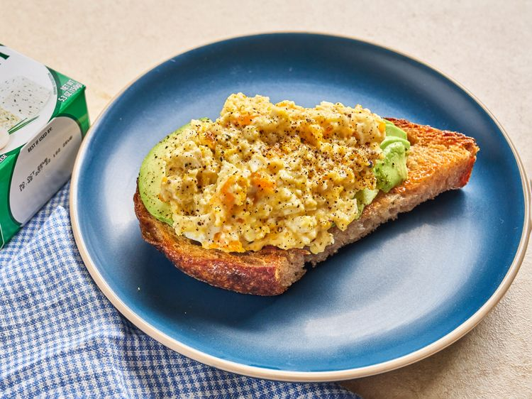

Boursin Egg Bake

Recipe Description
This is a simple four ingredient "casserole" that can be made for an easy
breakfast or lunch.
Original Source: AllRecipes
Ingredients
- Cooking spray
- 1 (5.3 ounce) package of Boursin Garlic and Fine Herbs chese
- 8 large eggs
- salt and ground black pepper
Steps
- Preheat oven to 400F. Spray a 9x9 baking dish with cooking spray.
- Place the Boursin in the center of the dish.
- Crack all 8 eggs into the dish around the Boursin.
- Bake until the egg white is cooked through, about 15 minutes. Yolks may be slightly runny.
- Mash the eggs and Boursin together with a fork, then season to taste with salt and pepepr.
Back to Index